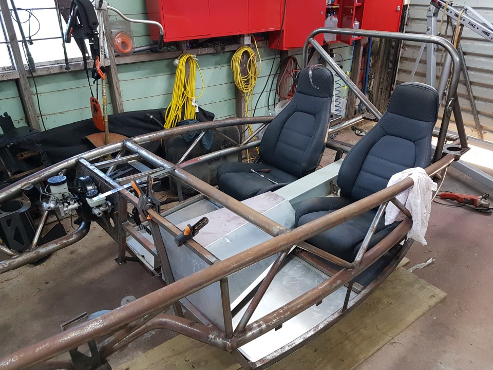

Seat Installation
Contents / Remove wiper lever
- Turn the seats upside down
- Using hammer and block of wood manipulate the mounting points to be flat with the sub frame rail.
- Test fit seats to chassis with 7/16 UNF bolts supplied, note you may need to cut these bolts if they protrude past the bottom of the chassis.
